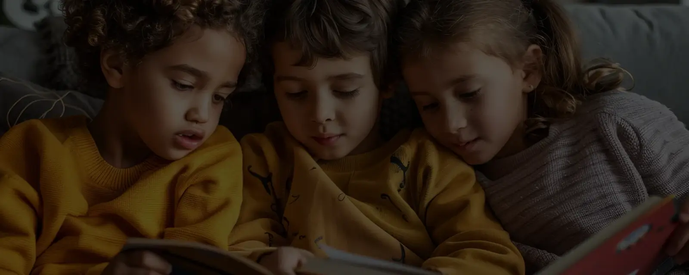
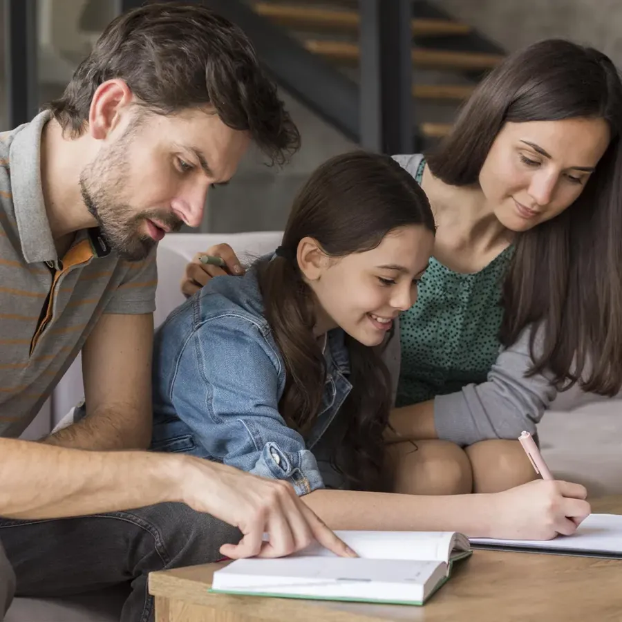

Qué hacemos
Estudiamos, evaluamos y atendemos las dificultades de aprendizaje de la lectura
Investigación
Investigamos y aportamos soluciones para mejorar el aprendizaje de la lectura.
- Atención y memoria con Glifing
Evaluación de la mejora de la atención y la memoria en niños con dislexia, TDAH y trastornos del lenguaje mediante el entrenamiento con Glifing.
- Legibilidad de textos en catalán
Desarrollo de un índice para evaluar la legibilidad de los textos escritos en catalán.
- Habilidades prelectoras: Latinoamérica y Cataluña
Artículo comparativo sobre las habilidades prelectoras de niños de países latinoamericanos y Cataluña, en relación con sus respectivos currículos educativos.
- El Lecturómetro de las bibliotecas
Desarrollo de una herramienta para bibliotecas orientada a fomentar y acompañar la lectura.
Formación
Compartimos lo que sabemos con profesionales, estudiantes y con la sociedad en general.
- Academia Corazón Lector
Espacio de formación gratuita orientado a acercar el conocimiento científico sobre el aprendizaje y las dificultades lectoras al conjunto de la ciudadanía.
- Formación para centros
En Avesedari diseñamos formaciones sobre cómo aprender y enseñar a leer que conectan ciencia y práctica para transformar el aprendizaje lector sin dejar a nadie atrás.
- Charlas para centros
Nos mueve la voluntad de promover un cambio de actitud respecto al tratamiento de las dificultades de aprendizaje.
- Prácticas universitarias
En Avesedari ofrecemos plazas de prácticas para estudiantes de Psicología o Pedagogía que deseen formar parte del Plan de Aprendizaje Lector y Lingüístico.

Responsabilidad social
Llevamos las soluciones lectoras a quienes más lo necesitan.
91,1 %
Mejora lectora en el PALL
De 800 alumnos con evaluación inicial y final. Mayo 2025 – julio 2026.
- PALL · Aprendizaje lector y lingüístico
Badalona
- CRAE
Adaptación a contextos de extrema vulnerabilidad.
- Benvinguts al meu país
Aprendizaje de la lengua y la lectura en contextos multiculturales.
- Proyectos en Latinoamérica
Costa Rica, Argentina y Chile

Becas
Ofrecemos becas para acceder al entrenamiento lector Glifing a familias y entidades que lo necesiten, pero no puedan asumir el coste.

¿Te sumas?
¡Ayúdanos a ayudar!